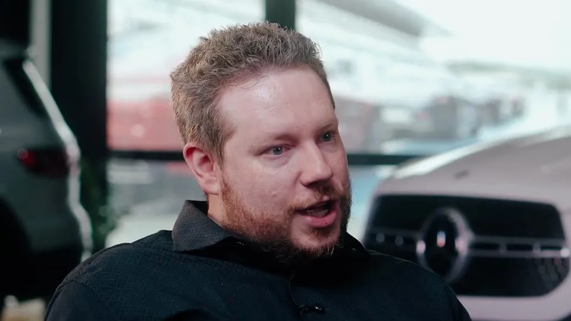

Case em destaque · Grupo Savar0403
SOC com Sophos MDR para tirar a segurança do técnico e levar à estratégia.
Um dos principais grupos de concessionárias do Sul do Brasil passou a tratar segurança como tema corporativo. Hoje, o ambiente é monitorado e respondido 24×7.
- 34unidades
- +900colaboradores
- +3 milataques neutralizados nos primeiros 15 dias